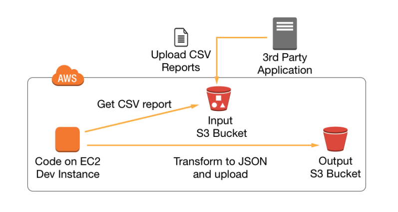
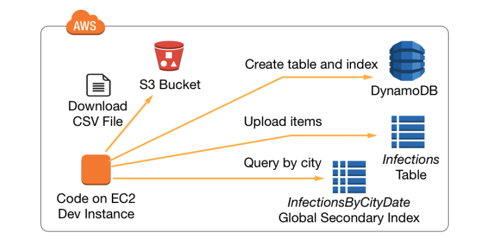
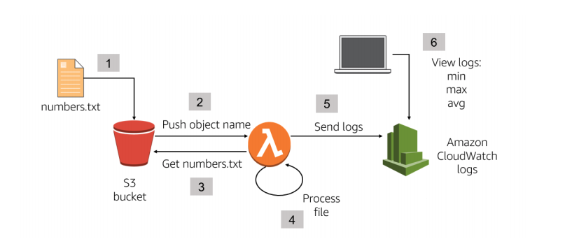
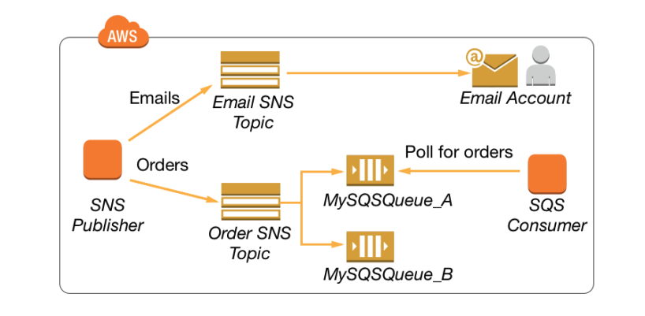
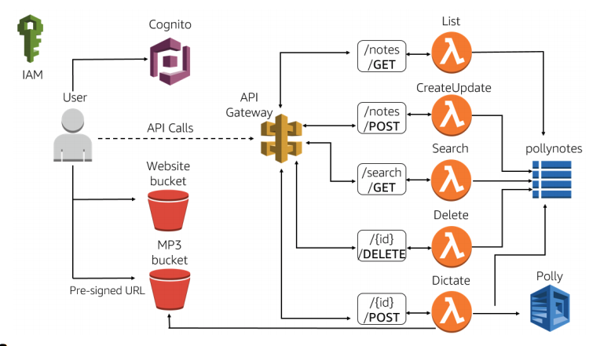

Developing Storage Solutions with Amazon S3

Developing Flexible NoSQL Solutions with Amazon DynamoDB

Developing Event-Driven Solutions with AWS Lambda

Developing Messaging Solutions with Amazon SNS and Amazon SQS

Developing an end to end Application with AWS
